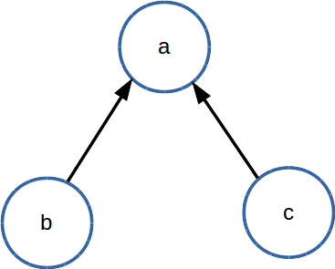

事件驱动编程
1 前言
1.1 yield from 关键词
在开始前有必要详细说明一下yield from关键词。我们从 参考资料1 看到python的内在处理机制是将所谓的协程概念和异步编程概念等都和python中的生成器迭代器概念重合了。实际上我们可以简单地将一个协程看作一个生成器对象，然后Task这个对象是基于Future这个对象的:
class Task(Future):
"""A coroutine wrapped in a Future."""
而Future对象的理解关键点还是在生成器概念和yield from这个关键词上（请读者参看 这个网页 ）。当然就作为python中函数的执行和生成器的惰性运算机制，比如:
gen.send('None')
之后然后返回一个结果这些这里就不多说了。
我们先看到这个例子:
def generator2():
for i in range(10):
yield i
def generator3():
for j in range(10, 20):
yield j
def generator():
x= yield from generator2()
print('return value of yield-from: {}'.format(x))
yield from generator3()
gen = generator()
print(list(gen))
其结果输出如下:
return value of yield-from: None [0, 1, 2, 3, 4, 5, 6, 7, 8, 9, 10, 11, 12, 13, 14, 15, 16, 17, 18, 19]
首先强烈建议读者试着将上面的 yield from 改成 yield 来试一下。这样我们看到yield from实现了一种生成器的 组合 逻辑。而直接yield某个生成器，最后得到的只是一个生成生成器的生成器罢了。
我们看到generator实现了这样的数据组合:

b和c这两个子协程或者说子生成器可以通过在一个新的函数中构建出一个新的协程函数，其数据是前面两个子协程数据的组合。
然后我们看到上面的 yield from 实际上并没有返回值，x的值是None。实际上python里面的函数yield语句和return语句并不互斥，看下面的例子:
def gen_fn():
result = yield 1
print('result of yield: {}'.format(result))
result2 = yield 2
print('result of 2nd yield: {}'.format(result2))
return 'done'
def caller_fn():
gen = gen_fn()
rv = yield from gen
print('return value of yield-from: {}'.format(rv))
gen = caller_fn()
print(list(gen))
其输出如下:
result of yield: None result of 2nd yield: None return value of yield-from: done [1, 2]
注意看 gen_fn 函数有return语句，那么这个生成器函数的生成对象通过yield from语句是可以获得返回值的，这个返回值由return语句。
最后来说明一下yield from语句和可迭代对象之间的关系:
class Test():
def __iter__(self):
yield self
return True
def test():
test = Test()
x = yield from test
print(x)
return x
gen = test()
print(list(gen))
True [<__main__.Test object at 0x7f66f7810ef0>] >>>
如果一个对象定义了 __iter__ 方法，那么我们知道这个对象在python中称之为可迭代对象了，其可以通过 for i in what 这样的语句来迭代等。而yield from语句实际上的求值就是对某个python可迭代对象具体进行迭代得到的。这里x的值实际上是True，而gen的值是由函数yield from语句组合出来的值，其实际上对应的是该可迭代对象的 __iter__ 方法，也就是yield self。
1.2 loop-with-callbacks
通过DefaultSelector构建起来的事件循环还有基于套接字的操作，下面代码来自 500lines 。若读者已经读过前面的套接字编程入门一文，那么理解这个脚本应该不成问题了。其中值得注意的是其刷url和处理重复url的python方法较好，值得我们学习。
#!/usr/bin/env python3.4
"""Sloppy little crawler, demonstrates a hand-made event loop and callbacks."""
from selectors import *
import socket
import re
import urllib.parse
import time
urls_todo = set(['/'])
seen_urls = set(['/'])
concurrency_achieved = 0
selector = DefaultSelector()
stopped = False
class Fetcher:
def __init__(self, url):
self.response = b''
self.url = url
self.sock = None
def fetch(self):
global concurrency_achieved
concurrency_achieved = max(concurrency_achieved, len(urls_todo))
self.sock = socket.socket()
self.sock.setblocking(False)
try:
self.sock.connect(('blog.cdwanze.org', 80))
except BlockingIOError:
pass
selector.register(self.sock.fileno(), EVENT_WRITE, self.connected)
def connected(self, key, mask):
selector.unregister(key.fd)
get = 'GET {} HTTP/1.0\r\nHost: blog.cdwanze.org\r\n\r\n'.format(self.url)
self.sock.send(get.encode('utf-8'))
selector.register(key.fd, EVENT_READ, self.read_response)
def read_response(self, key, mask):
global stopped
chunk = self.sock.recv(4096) # 4k chunk size.
if chunk:
self.response += chunk
else:
selector.unregister(key.fd) # Done reading.
links = self.parse_links()
for link in links.difference(seen_urls):
urls_todo.add(link)
Fetcher(link).fetch()
seen_urls.update(links)
urls_todo.remove(self.url)
if not urls_todo:
stopped = True
print(self.url)
def body(self):
body = self.response.split(b'\r\n\r\n', 1)[1]
return body.decode('utf-8')
def parse_links(self):
if not self.response:
print('error: {}'.format(self.url))
return set()
if not self._is_html():
return set()
urls = set(re.findall(r'''(?i)href=["']?([^\s"'<>]+)''',
self.body()))
links = set()
for url in urls:
normalized = urllib.parse.urljoin(self.url, url)
parts = urllib.parse.urlparse(normalized)
if parts.scheme not in ('', 'http', 'https'):
continue
host, port = urllib.parse.splitport(parts.netloc)
if host and host.lower() not in ('blog.cdwanze.org'):
continue
defragmented, frag = urllib.parse.urldefrag(parts.path)
links.add(defragmented)
return links
def _is_html(self):
head, body = self.response.split(b'\r\n\r\n', 1)
headers = dict(h.split(': ') for h in head.decode().split('\r\n')[1:])
return headers.get('Content-Type', '').startswith('text/html')
start = time.time()
fetcher = Fetcher('/')
fetcher.fetch()
while not stopped:
events = selector.select()
for event_key, event_mask in events:
callback = event_key.data
callback(event_key, event_mask)
print('{} URLs fetched in {:.1f} seconds, achieved concurrency = {}'.format(
len(seen_urls), time.time() - start, concurrency_achieved))
1.3 loop-with-coroutines
如果读者理解了yield from关键词，那么下面的代码也是很好理解的。这段代码基于上面的代码然后稍作修改而来。
#!/usr/bin/env python3.4
"""Sloppy little crawler, demonstrates a hand-made event loop and coroutines.
First read loop-with-callbacks.py. This example builds on that one, replacing
callbacks with generators.
"""
from selectors import *
import socket
import re
import urllib.parse
import time
class Future:
def __init__(self):
self.result = None
self._callbacks = []
def result(self):
return self.result
def add_done_callback(self, fn):
self._callbacks.append(fn)
def set_result(self, result):
self.result = result
for fn in self._callbacks:
fn(self)
def __iter__(self):
yield self # This tells Task to wait for completion.
return self.result
class Task:
def __init__(self, coro):
self.coro = coro
f = Future()
f.set_result(None)
self.step(f)
def step(self, future):
try:
next_future = self.coro.send(future.result)
except StopIteration:
return
next_future.add_done_callback(self.step)
urls_seen = set(['/'])
urls_todo = set(['/'])
concurrency_achieved = 0
selector = DefaultSelector()
stopped = False
def connect(sock, address):
f = Future()
sock.setblocking(False)
try:
sock.connect(address)
except BlockingIOError:
pass
def on_connected():
f.set_result(None)
selector.register(sock.fileno(), EVENT_WRITE, on_connected)
yield from f
selector.unregister(sock.fileno())
def read(sock):
f = Future()
def on_readable():
f.set_result(sock.recv(4096)) # Read 4k at a time.
selector.register(sock.fileno(), EVENT_READ, on_readable)
chunk = yield from f
selector.unregister(sock.fileno())
return chunk
def read_all(sock):
response = []
chunk = yield from read(sock)
while chunk:
response.append(chunk)
chunk = yield from read(sock)
return b''.join(response)
class Fetcher:
def __init__(self, url):
self.response = b''
self.url = url
def fetch(self):
global concurrency_achieved, stopped
concurrency_achieved = max(concurrency_achieved, len(urls_todo))
sock = socket.socket()
yield from connect(sock, ('blog.cdwanze.org', 80))
get = 'GET {} HTTP/1.0\r\nHost: blog.cdwanze.org\r\n\r\n'.format(self.url)
sock.send(get.encode('utf-8'))
self.response = yield from read_all(sock)
self._process_response()
urls_todo.remove(self.url)
if not urls_todo:
stopped = True
print(self.url)
def body(self):
body = self.response.split(b'\r\n\r\n', 1)[1]
return body.decode('utf-8')
def _process_response(self):
if not self.response:
print('error: {}'.format(self.url))
return
if not self._is_html():
return
urls = set(re.findall(r'''(?i)href=["']?([^\s"'<>]+)''',
self.body()))
for url in urls:
normalized = urllib.parse.urljoin(self.url, url)
parts = urllib.parse.urlparse(normalized)
if parts.scheme not in ('', 'http', 'https'):
continue
host, port = urllib.parse.splitport(parts.netloc)
if host and host.lower() not in ('blog.cdwanze.org'):
continue
defragmented, frag = urllib.parse.urldefrag(parts.path)
if defragmented not in urls_seen:
urls_todo.add(defragmented)
urls_seen.add(defragmented)
Task(Fetcher(defragmented).fetch())
def _is_html(self):
head, body = self.response.split(b'\r\n\r\n', 1)
headers = dict(h.split(': ') for h in head.decode().split('\r\n')[1:])
return headers.get('Content-Type', '').startswith('text/html')
start = time.time()
fetcher = Fetcher('/')
Task(fetcher.fetch())
while not stopped:
events = selector.select()
for event_key, event_mask in events:
callback = event_key.data
callback()
print('{} URLs fetched in {:.1f} seconds, achieved concurrency = {}'.format(
len(urls_seen), time.time() - start, concurrency_achieved))
下面我决定进一步利用python3.4的asyncio模块来改写上面的脚本。值得一提的是前面谈及的协程函数都推荐用 @asyncio.coroutine 装饰器装饰起来，虽然前面我们看到实际上不用装饰器yield from也能构成某种协程数据的组合逻辑，但如果不加上和asyncio模块的evenloop的一些方法不兼容，比如 run_until_complete 方法就要求一个加上这个装饰器的所谓的协程函数，然后官方文档也谈及一些兼容性问题。至于python3.5新加入的 async def 和 await 关键词这里暂时不考虑了。
基于前面的两个例子我写了一个crawler.py程序，其在我写的infome模块的crawl子模块 那里 。
2 asyncio模块详解
一般首先你需要通过 get_event_loop 函数来获取一个全局性的事件驱动循环，其返回一个EventLoop对象，asyncio模块为EventLoop对象提供了很多方法，很多任务都可以通过调用这个EventLoop对象的方法来完成，下面简称为loop。
run_until_complete 方法是本来是要接受一个Future对象，然后将其执行完。如果接受的是一个协程对象（coroutine object），则要将其转变成为Task对象（Task对象是Future对象的子类）。
loop的 close 方法，关闭事件循环。loop的 stop 方法停止运行事件循环，和close方法的区别就是stop方法之前回调的函数还会继续运行，之后的不会（如果后面又有 run_forever 语句，则后面回调的那些函数又会被执行。）。而close方法是完全强制中止了。 然后loop的 run_forever 方法是永久运行事件循环，直到stop方法被调用。
上面这些前面也谈过一些了，都是最基本的知识。
2.1 添加回调
2.1.1 add_reader方法
BaseEventLoop.add_reader(fd, callback, *args)
事件循环对象的 add_reader 方法，监听某个文件，如果可读事件发生，则执行callback函数，后面是传递给callback函数的一些参数。
2.1.2 remove_reader方法
移除某个reader。
2.1.3 add_writer方法
监听可写事件。
BaseEventLoop.add_writer(fd, callback, *args)
2.1.4 remove_writer方法
移除某个writer。
2.2 自定义协议
自定义的协议继承自Protocol类，然后其调用loop的 create_server 来接受这个协议类来时间创建一个协程式的服务器程序:
coroutine BaseEventLoop.create_server(protocol_factory, host=None, port=None, ...)
大概如下这个例子所示:
import asyncio
loop = asyncio.get_event_loop()
class EchoProtocol(asyncio.Protocol):
def connection_made(self, transport):
self.transport = transport
def data_received(self, data):
self.transport.write(data)
def connection_lost(self, exc):
server.close()
server = loop.run_until_complete(loop.create_server(EchoProtocol, '127.0.0.1', 4444))
loop.run_until_complete(server.wait_closed())
上面的代码运行效果大致如下所示:
wanze@wanze-ubuntu:~$ netcat localhost 4444 d d a a ^C
就是通过netcat你输入什么服务器那边就返回什么。
其定义的方法有:
- connection_made
这个callback继承自Protocol类，逻辑是如果一个连接建好了，那么执行该函数。其接受一个参数transport。也就是具体协议的传输层。
- data_received
这个callback继承自Protocol类，如果某个数据传进来了，那么该函数将被执行。其接受一个参数就是传进来的data。
- eof_received
数据结束完毕是调用。你可以在另外一端用transport发送写入结束信号 write_eof() 。
2.3 添加Task
通过loop的 create_task 方法来给事件循环添加一个Task任务。一般我们使用不用再去考虑Future的概念了，简单理解就是给loop事件循环添加一个待执行的协程任务，然后这个任务对象可以内部可以添加计划多个任务流，大抵如此。
BaseEventLoop.create_task(coro)
2.4 协程任务结果聚合
2.4.1 使用Queue
from asyncio import JoinableQueue as Queue
asyncio提供了Queue对象支持。一般使用将其绑定在主事件循环上。
queue = Queue(loop=self.loop)
然后其含的重要方法有:
- get方法
- 获取一个item，协程方法。（你需要先确保task_done，之后item才能正常使用，否则你get的是一个协程对象）
- put方法
- 放入一个任务协程对象，如果queue满了则会等待，协程方法。
- task_done方法
- 阻塞程序，确保queue下一次要get的item已经完成了（也就是协程函数已经展开了）
- put_nowait方法
- 放入一个任务协程对象不阻塞，如果queue满了则会抛出异常（若Queue设的是默认的maxsize=0，则queue永远都不会满的）
- join方法
- queue里所有的item任务都要完成，程序有个计数器，若加入一个任务到queue，则计数器加一，若一个task_done()被执行，则计数器减去一，如果计数器未完成任务等于0了，则join方法unblock。但需要注意的是这个join方法本身也是协程式的，即其对于主程序来说本没有阻塞。
2.4.2 使用gather函数
asyncio.gather(*coros_or_futures, loop=None, return_exceptions=False)
gather函数将收集一些协程函数或任务或futures等，等所有的结果都聚合之后，将返回一个所含结果的列表（以你原先指定的各个协程的顺序）。
return_excepitons 默认是False，也就是其内收集的这些协程如果有一个发生异常了，那么将视为整体发生异常。如果设为True，则允许个别子协程发生异常，而且这些异常被视为结果放入列表中。
然后 CancelledError 异常，如果是上层Future抛出的cancel信号，则其内所有的子任务都将被cancel，而如果某个子任务被cancel，则会抛出 CancelledError ，不影响其他子任务。
3 参考资料
- a-web-crawler-with-asyncio-coroutines 这种原英文网页 , 这里有个中文翻译网页 。
- playing-with-asyncio